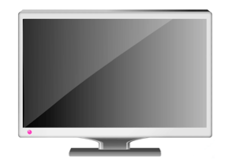
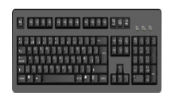
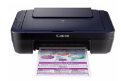
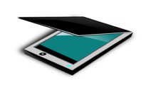

Las computadoras están compuestas por varios elementos:
CPU

Es la unidad central de procesamiento, encargada de recibir los datos a través del teclado o el mouse para darnos, después de procesarlos, una respuesta que aparecerá en la pantalla. En otras palabras, desempeña la misma función que el cerebro en el cuerpo humano.
Algunos de estos elementos también son llamados:
Periféricos que son todas los elementos o piezas externas que se conectan al CPU.
Monitor

Es similar a un televisor, sirve para ver en su pantalla los textos y gráficos que vas creando.
Teclado

Es parecido al de una máquina de escribir. Existen diferentes modelos, pero todos tienes características en común.
Impresora

Te permite imprimir una o varias hojas de trabajo que has realizado en la pantalla de tu computadora.
Existen tres tipos:
- Impresora de matriz de punto
- Impresora de inyección de tinta
- Impresora láser
Escáner

Con este periférico puedes ingresar la computadora cualquier gráfico o texto para modificar tu trabajo.
Mouse

Es un periférico que permite desplazarse por medio de un puntero en cualquier dirección de la pantalla. Viene con dos botones y una rueda que se utilizan para activar diferentes opciones.